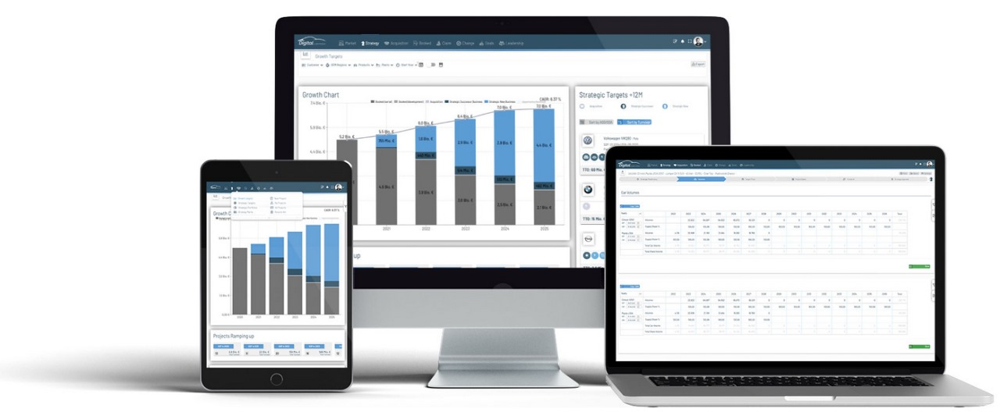
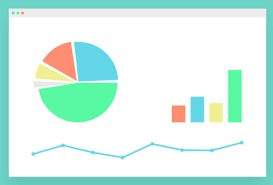

Assistance Gestion Informatique
CAP SUR LA PERFORMANCE

L'assistant de gestion pour Excel.
Comprendre l'entreprise par la dynamique des flux de tresorerie.
Surveiller les indicateurs clefs pour prevenir la defaillance des
entreprises. Realiser en quelques minutes un diagnostic complet.
Cette version "etudiants" permet a travers de nombreux exemples de
pratiquer tres rapidement le diagnostic financier.
Elle est en effet enrichie d'exemples concrets d'analyse qui vous aideront
a maitriser l'analyse financiere dans differents secteurs d'activite. Une longue
experience professionnelle et pedagogique nous a montre qu'une bonne facon de parfaire
ses connaisances est de les mettre en application a travers des exemples concrets.
La pertinence d'une information de gestion se mesure plus par sa rapidite
d'obtention que par son degre de precision.
Licence a partir de 12,90$
Special etudiantsL'outil de controle et de suivi de l'entreprise.
Avec le logiciel l'assistant de gestion, surveillez regulierement la sante financiere des entreprises que vous conseillez.
L'assistant de gestion permet a partir des donnees compatibles (balance)
d'avoir une vision dynamique de l'entreprise en mettant en evidence les flux financiers
sur plusieurs annees (5 ans), et de controler les indicateurs de rentabilite, d'equilibre
financier et de croissance.
Vous etes expert-comptable, dynamisez l'entretien annuel de presentation des comptes en elargissant
le champ de vision de l'analyse.
Quelques clics suffisent pour realiser un dossier d'analyse complet.
Logiciel realise en partenariat avec la societe High Navation.

Ces applications sont destinees a fournir une aide complementaire dans la getsion de votre
entreprise.
Elles ne sauraient remplacer l'Expert Comptable. Elles n'ont pas pour but de se subsituer aux
situations intermediaires telles que peuvent les etablir les professionnels de la comptabilite.
L'etablissemnt des situations intermediaires suppose de passer un grand nombre d'operations
diverses de facon a ce que les coomptes intermediaires presentent le meme degre de precision que les comptes
annules : ecritures d'inventaire, provisions charges a payer...
Notre offre permet d'obtenir rapidement des etats de gestion presentant un niveau de precision
acceptable dans la mesure ou la comptabilite est a jour
La pertinence d'une information de gestion se mesure plus par sa rapidite d'obtention que par son
degre de precision.